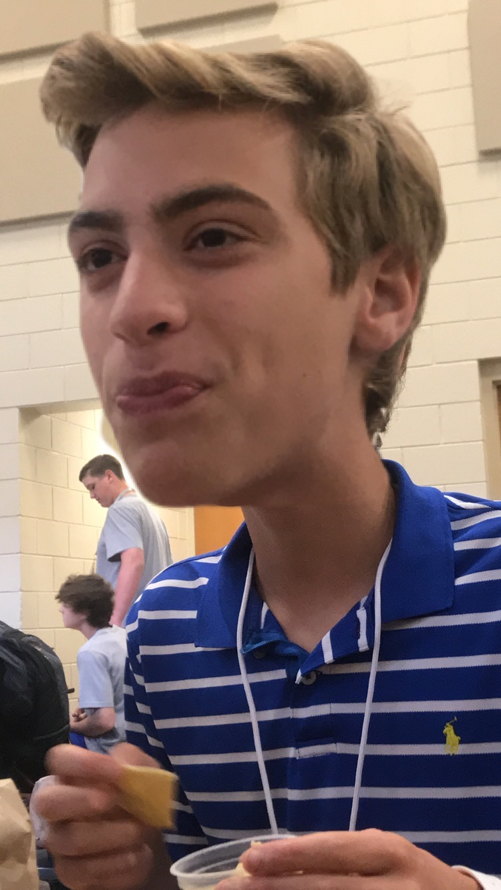
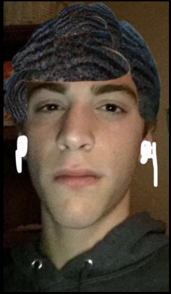

Gabriel Engel is a strange...yet wonderful man. Gabe is from the great state of Louisiana and moved to Greenville with his mom, dad, brother, and a dog, Neeko, on Christmas of his 6th grade year. He loves to swim, run, play basketball, play football, and do pretty much anything outside. Gabe also loves to live in his filth as he does not shower or brush his teeth often. The only time his teeth are flossed is when he goes to the dentist. Another important detail about Gabe is his dedication to the cross country and track teams. Gabe started running in 7th grade and hasn't stopped since. Considering running is a passion for Gabe, it's also the thing that has brought him to his closest friends, including Ian, the best one.
 